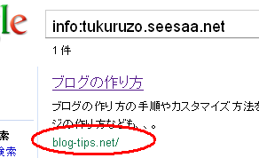
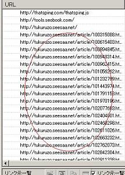

独自ドメインブログの作り方
当ブログはサブドメインの tukuruzo.seesaa.net から、独自ドメインの blog-tips.net へと移行してみました。
独自ドメインブログの作り方は、主に、無料ブログサービスに設定する方法とレンタルサーバーで作る方法の２種類があります。
無料ブログサービスでの独自ドメイン化の手順
無料ブログで独自ドメインを使用する際、主に３種類のパターンがありますが、設定方法自体はどの場合でもそれほど変わりません。
【①独自ドメインを取得して新規でブログを作成する場合】
まず、無料ブログサービス側から割り当てられるURLを使い、通常どうりにブログを作成します。
次に、その作成した無料ブログに独自ドメインをホストする形になります。
たいてい、半日程度で設定が反映されて、取得した独自ドメインでブログが表示されるようになります。
- 独自ドメインの取得
- ネームサーバーやDNSの設定
- 無料ブログサービス側の設定
【②既に作成している無料ブログを独自ドメイン化】
当サイトの場合はこちらでした。（Seesaablog）
リダイレクト関係は使えないケースが多いので、ウェブマスターツールなどでURLの変更を検索エンジンへ通知することになります。
当サイトの場合、設定から半日程度で独自ドメインで表示されるようになりましたが、検索エンジン側のインデックスが完全に切り替わるには、２週間程度かかったようです。
- 旧サイトをウェブマスターツールに登録
- 独自ドメインの取得
- ネームサーバーやDNSの設定
- 無料ブログサービス側の設定
- 内部リンクのURL変更（絶対リンクの場合）
- 外部からの被リンクのurl変更
- ブログランキングなどの登録変更
- 新サイトもウェブマスターツールに登録
- 旧サイトのウェブマスターツールでURL変更を通知
リンク関係はすべて新URLへと統一するのがぶなんです。
新サイト内には、旧サイトへのリンクがひとつもないようにすることをおすすめします。
「info:旧サイトのURL」でサイト情報を検索してみて、新しいドメインが表示されていたら移行が完了です。

【③既に独自ドメイン化しているブログを違うドメインに変更】
違うドメインへ変更する場合は、旧サイトにアクセスした際、新ドメインへ301リダイレクトされるかどうかを確認しましょう。
旧ドメインの設定先が必要になるので、レンタルサーバーを契約することになるかと思います。
- 旧ドメインを違うサーバーに設定
- 新規ドメインをブログに設定
- 旧ドメインから新ドメインへ301リダイレクト
- 内部リンクの URL 変更（絶対リンクの場合）
- 外部からの被リンクの url 変更
- ブログランキングなどの登録変更
- ウェブマスターツールでURL変更を通知
移行が完了したあとも、リダイレクト関係はすっと保持しておくことをおすすめします。
ちなみに、無料ブログサービスに設定した場合、取得したドメインでのメールアドレスも使うには、別にレンタルサーバーを借りる必要があります。
■関連記事
- 独自ドメインの取得方法
- 独自ドメインが使えるブログサービス
- シーサーブログを独自ドメイン化
- ブログの独自ドメイン名の作り方
- jpドメインの個人情報や料金比較
- 独自ドメインとサブドメインの見分け方
- ムームーDNSのカスタム設定(シーサーブログ)
- 独自ドメイン化ブログのインデックス推移
内部リンクの修正方法
当サイトを例にすると、シーサーブログで独自ドメイン化したあとは、カテゴリや過去ログのURLはすべて自動で修正されます。
けれども、記事中などに自分で貼り付けた内部リンクは、新しいURLへ手動で修正する必要があります。
修正する際、記事エントリーの「1234.html」の部分や「article」のフォルダ部分は同一の状態で出力されるので、ドメイン部分を変更することになります。
例：）
http://tukuruzo.seesaa.net/article/1234.html
を
https://blog-tips.net/article/1234.html
に修正
このブログの場合は、記事中などの tukuruzo.seesaa.net の部分を見つけて blog-tips.net へと変更しました。
リンク切れチェックの無料ツールなどを使うとわりと簡単です。
ブログのリンク切れとリダイレクトのSEO対策
新ドメインブログからみて、旧ドメインへのリンクは外部リンク扱いになりますが、現在のこのブログの外部リンクをチェックしてみると、こんな感じで旧サイトへのリンクがけっこうあります。

このブログ内の旧urlへのリンクがなくなったら、自分が管理している関連ブログやランキング登録などの外部からの被リンクもできるだけ新しいurlに変更した方がぶなんです。
レンタルサーバーでの独自ドメインブログの作り方
取得した独自ドメインを無料ブログサービスでは使わず、自分でレンタルサーバーを利用する場合は、CMSなど何らかのブログ構築ツールをインストールする必要があります。
ツールとしては、WordPressとMovable typeのふたつに人気が集中していますが、個人での利用の場合は無料で利用することができます。
無料ブログサービスに設定する場合と比較すると、ソフトのインストール方法やブログのカスタマイズ方法などがむずかしめです。
できるだけ、自動インストールに対応しているレンタルサーバーを利用することをおすすめします。